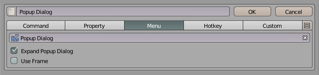
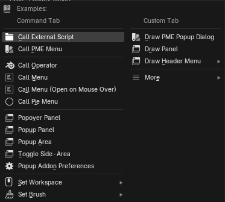
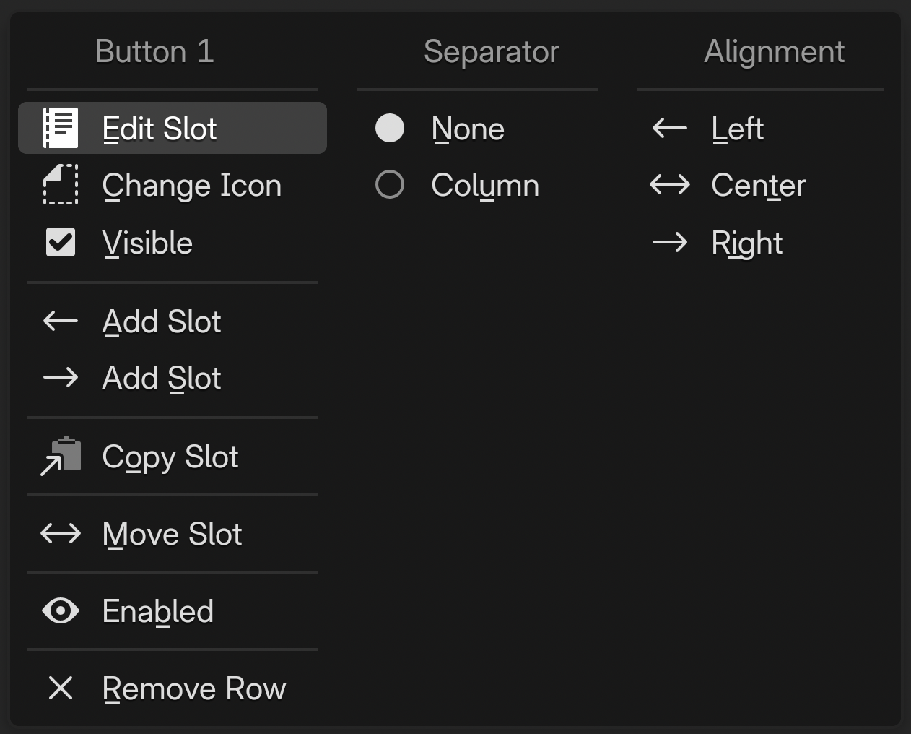
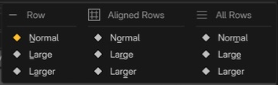

Pop-up Dialog Editor¶
Pop-up Dialog creates a small popup UI from buttons, properties, sliders, and checkboxes arranged in rows and columns. Unlike Pie Menu and Regular Menu, it lets you design the layout yourself.
Configuration guide — features, combinations, and uses (for AI)
Name: Popup Dialog / Type ID: DIALOG. Combines actions and settings in rows and columns, displayed as a dialog or popup. Supports Command / Property / Menu / Hotkey / Custom with additional rows and columns.
Assignments: Property provides an RNA-path widget, Command executes Python, and Custom draws using Blender’s
UILayout.Menu combinations: open other menus or expand Regular Menu / Popup Dialog contents. Property / Property Stack references place settings widgets.
Placement: open from a hotkey, expand inside a Pie Menu, or extend an existing Panel / Header. Distinguish the dialog’s own settings from width and position on the referencing slot.
Design: decide row/column layout separately from popup Mode. Check opening the UI and executing its buttons in the target context separately.
See layout for rows and columns, Extend Target for insertion, and Advanced settings for display options.
Interface and editing workflow¶
 1Name and basic controlsCheck the name and enabled state, and open the preview or advanced settings.
2Extend TargetChoose an existing panel or header to extend. No target is selected in this example.
3Advanced settingsSet the description, availability conditions, display mode, width, and property layout.
4Keymap / HotkeyChoose where and with which key to invoke it.
5Menu slotsArrange display settings in rows and columns. Use the controls at the right of each row and item to edit them.
1Name and basic controlsCheck the name and enabled state, and open the preview or advanced settings.
2Extend TargetChoose an existing panel or header to extend. No target is selected in this example.
3Advanced settingsSet the description, availability conditions, display mode, width, and property layout.
4Keymap / HotkeyChoose where and with which key to invoke it.
5Menu slotsArrange display settings in rows and columns. Use the controls at the right of each row and item to edit them.
Set the name, availability, and invocation method, then build the contents with slots.
Name and basic controls¶
Controls include enabled state, preview, menu selection, name, tags, documentation, and advanced settings. See selected menu settings.
Keymap / Hotkey¶
Keymap selects where the dialog is available; Hotkey sets the key and modifiers. Open Mode determines the trigger action. See the shared Hotkey settings.
Extend Target¶

Example with TOPBAR_HT_upper_bar as the destination.¶
The row below the top bar inserts this Pop-up Dialog into an existing Blender panel or header.
Added in version 2.0.0: Redesigned Extend Panel / Extend Header so multiple Pop-up Dialogs / Regular Menus can share a Target.
- Extend Target:
Destination Blender class ID, with search. Paste the string obtained through Interactive Panels’ Copy Panel ID. When unset, the dialog works as an ordinary hotkey-invoked popup.
- Side:
Insertion position. Prepend adds at the start; Append adds at the end. The image uses left and right triangle buttons.
- R:
Appears only for
TOPBAR_HT_targets and toggles insertion into the TOPBAR header’s right region.- Order:
Display order for menus sharing a Target. Lower values draw first.
See Interactive Panels and Extend Panel for the insertion workflow.
Advanced settings¶
Description and Poll set the tooltip and availability. Dynamic Python descriptions are also supported. See the shared advanced settings.
Added in version 2.1: Property Split aligns labels and input fields. In addition to the whole-menu setting, individual items can override it.
Property Split separates property names from values; Property Decorators controls animation-related decorations.
Display modes¶

Choose one of three modes for the popup’s appearance and closing behavior.
Mode |
Pie |
Dialog |
Popup |
|---|---|---|---|
Closes when the mouse leaves the popup |
❌ |
❌ |
✅ |
Closes after interacting with a widget |
✅ |
❌ |
❌ |
OK button |
❌ |
✅ |
❌ |
Movable |
❌ |
✅ |
✅ |
Customizable width |
❌ |
✅ |
✅ |
Layout¶
Build a Pop-up Dialog UI with Blender’s row-and-column layout system.
Slots become widgets such as buttons or properties. Split rows into columns and add subcolumns or subrows as needed. Adding, removing, and reordering slots changes the popup layout.

In the editor, divide a row into columns, then add subcolumns and subrows as needed.
To add a subcolumn, open an item’s menu with LMB and select the Column separator. Use Begin Subrow and End Subrow in the menu to add subrows inside a column.
A Custom slot can use Python layout APIs directly to draw widgets in place of a default button.
This video by original author roaoao demonstrates combining rows and columns. Its UI is from an older version, but it shows how to build a complex layout.
Popup Dialog with Complex Layout
Expand the layout in a parent popup¶

When a Pie Menu or Pop-up Dialog slot references this dialog, choose between opening a separate popup and expanding its layout in the calling menu. Enable Expand Popup Dialog in the calling slot’s Menu tab for expansion.
Fixed columns¶

Fixed Columns gives columns equal widths. It does not set a width in pixels.
Alignment¶

For an unsplit row without columns, choose left, center, or right horizontal button alignment.
Embedded panels and link controls¶
Added in version 2.0.5: Added collapsible panels and editor link-button visibility settings. Embedded panels require Blender 4.2 or later.
A. Panel Row embeds another Pop-up Dialog as a collapsible panel. “Display As” references the dialog used for its contents. Use the body for target and initial-state settings and the rightmost panel icon for whole-row actions.
B: ordinary Menu slot: Editor Link Buttons controls button visibility. Even when off, Go to Linked Menu remains available in the slot action menu.
C: Panel Row body: the link button is always shown. Go to Panel Content is also available in the body menu. Navigation is unavailable if the reference is invalid.
Edit slots and rows¶
Slot contents¶
Sets the Python code evaluated when the item is executed. When calling an operator, use one that supports the current editor, mode, and selection.
# Add a cube in the 3D Viewport's Object Mode
bpy.ops.mesh.primitive_cube_add()
Writing commands
The input limit is 1,024 UTF-8 bytes. Text containing multibyte characters reaches the limit sooner than 1,024 characters.
Separate short simple statements with ;; do not mechanically flatten indented blocks into one line.
See Code Input and Execution for checking length and moving code into an external script.
Global variables
Examples of available globals:
C: the context PME provides to scriptsO: bpy.ops (Blender operators)E: event information
See Scripting Reference for details.
Specify an object property path to display it as a widget.
For example, bpy.context.object.location displays and edits the object’s location.
Tool settings referenced with tool_props() appear only when available in the target editor, mode, and tool.
Otherwise they are hidden. Use the Custom tab to specify your own display conditions or alternative content.
See the API reference for the function’s arguments.
Advanced property operations
Use Property Editor when you need indexing or more complex property operations.
When clicked, calls another menu item created in PME. Examples:
Display a Popup Dialog with
Expand Popup DialogDisplay a Regular Menu with
Open on Mouse OverRun a Macro Operator
When clicked, finds and executes the operator assigned to the specified Blender hotkey.
For example, use Blender’s standard G for Move or R for Rotate.
Sets Python code evaluated when the UI is drawn.
L is the layout object; use Blender’s layout API to build the UI.
This code also runs on redraw. Place buttons for actions such as adding or removing objects,
rather than performing those actions directly while drawing.
# Display a label inside a box
L.box().label(text="Add Mesh")
# Arrange several buttons vertically
col = L.column(); col.operator("mesh.primitive_cube_add", text="Cube"); col.operator("mesh.primitive_uv_sphere_add", text="Sphere")
These are two independent examples. To place several UI elements in one Pie Menu slot, wrap them in a single column or box as in the second example. Adding multiple elements directly to the pie layout can shift subsequent slots to different directions.
The input limit is 1,024 UTF-8 bytes. See Code Input and Execution for length limits, multiline code, and external scripts.
Add a slot preset¶
{kind=link}

Use the rightmost hamburger menu () to add one of the supplied slot functions.
The menu opened from a slot button edits its content, icon, and position. The menu at the right end of a row controls the whole row’s size, spacing, insertion, and movement. Items vary by slot type and row structure.
Slot actions (PDI)¶
{kind=link}

An ordinary slot named Button 1.¶
Item |
Action and availability |
|---|---|
Edit Slot |
Edits the slot’s contents. |
Change Icon |
Changes its icon. |
Hide Text |
Hides the label, leaving only the icon. Available for slots with an icon and for Property slots. |
Visible |
Toggles slot visibility. |
Go to Linked Menu |
Opens the referenced menu for editing. Shown for linked Menu slots; disabled for missing or invalid references. |
← Add Slot / → Add Slot |
Adds a slot to the left / right of the selected slot. |
Split Row |
Splits before this slot. Available after the first slot in an ordinary row without columns or alignment. |
Copy Slot / Paste Slot |
Copies a slot / pastes copied content. Paste Slot appears when a slot has been copied. |
Move Slot |
Chooses a destination. Not shown in a Panel Row header. |
Enabled / Disabled |
Toggles enabled state. The label reflects the current state. |
Remove Slot / Remove Row |
Removes the slot. If it is the only slot, removes the row instead; available when other rows exist. |
The groups on the right control separators and alignment before the slot.
Group |
Items and meaning |
|---|---|
Separator |
None: no separator. Spacer: adds preceding space except at the row start. Column: starts a new column; unavailable in Panel Row headers, aligned rows, and similar cases. |
Column |
Begin Subrow / End Subrow: sets or clears the start/end of a horizontal subrow inside a column. Available according to the current structure in ordinary rows with columns. |
Alignment |
Left / Center / Right: establishes alignment relative to this position. Available in rows without columns. Clear removes existing row alignment. |
Row actions (PDR)¶

Ordinary row action menu.¶
Item |
Action and availability |
|---|---|
Size |
Chooses row height and scope. See the size settings below. |
Spacer |
Chooses space above the row and scope. Not shown for the first row. |
Fixed Buttons |
Equalizes button widths in a row without columns, or a subrow inside a column. |
Fixed Columns |
Equalizes column widths. Available for rows with columns; does not enter a fixed pixel width. |
Add Row Above / Below |
Adds an ordinary row above / below the current row. |
Add Panel Above / Below |
Adds a Panel Row above / below the current row. Requires Blender panel-layout support. |
Join Row |
Joins the next ordinary row into this row. Unavailable if there is no next row or it is a Panel Row. Column and alignment separators in the joined rows are also removed. |
Copy Row / Paste Row |
Copies a row / inserts a copied row before the current one. Paste Row appears when a row has been copied. |
Move Row |
Chooses a destination for the entire row. |
Remove Row |
Removes the entire row. Available when other rows exist. |
Size — height and scope¶
{kind=link}

Normal / Large / Larger use 1 / 1.25 / 1.5 times the standard height. Row affects the current row, Aligned Rows affects a contiguous group without spacing, and All Rows affects every row.
Spacer — space between rows¶

None / Normal / Large / Larger selects progressively wider spacing. Row affects space above the current row; All Rows affects gaps between all rows. Row’s None can be unavailable for adjacent rows containing columns.
Panel body actions (PDI)¶

Item |
Action and availability |
|---|---|
Edit Panel Target |
Sets or changes the dialog used for panel contents. |
Go to Panel Content |
Opens the referenced dialog for editing when the reference is valid. |
Default Closed |
Starts the panel collapsed. |
Header Layout |
Places slots in the panel header. Enabling it adds an initial header slot if needed. |
Copy Panel Row / Paste Row |
Copies the entire panel row / inserts a copied row before it. Paste Row appears when a row has been copied. |
Move Panel Row |
Chooses a destination for the entire panel row. |
Remove Panel Row |
Removes the panel row. Available when other rows exist. |
Turning Header Layout off retains existing header slots but leaves them inactive. Their menu offers Enable Header Layout to reuse them and Delete Inactive Header to remove them.
Panel row actions (PDR)¶

Panel Row is the row-type heading. This menu manages placement of the entire panel.
Item |
Action and availability |
|---|---|
Header Layout |
Toggles use of header slots. |
Spacer |
Sets space above the panel row. Available after the first row. |
Add Row Above / Below |
Adds an ordinary row above / below. |
Add Panel Above / Below |
Adds another panel row above / below. |
Copy Panel Row / Paste Row |
Copies the panel row / inserts a copied row before it. Paste Row appears when a row has been copied. |
Move Panel Row / Remove Panel Row |
Moves / removes the entire panel row. Removal is available when other rows exist. |
Ordinary-row Size / Fixed Buttons / Fixed Columns / Join Row are not offered for panel rows.
Opening editing menus from scripts
Use bpy.ops.pme.pdi_menu('INVOKE_DEFAULT', idx=...) for slot actions and bpy.ops.pme.pdr_menu('INVOKE_DEFAULT', row_idx=...) for row actions. Both target the menu currently selected in PME.
idx is a position in the slot collection; row_idx is the row-start position in that same collection, not its visible row number. Invoke in an editing context and do not reuse stale positions after switching menus.
Inline editing hotkeys¶
These edit buttons and rows directly in preview or in a Pop-up Dialog opened while the editor is active.
Row management¶
Action |
LMB |
Ctrl |
Shift |
OS |
|---|---|---|---|---|
Open menu |
LMB |
|||
Add row below |
LMB |
Ctrl |
||
Add row above |
LMB |
Ctrl |
Shift |
|
Cycle row size |
LMB |
Shift |
||
Cycle row spacer |
LMB |
OS |
Advanced uses¶
A temporary alternative to the N-Panel¶
Collect settings in a Pop-up Dialog and invoke it by hotkey to keep them available without a permanent N-Panel presence. Property and Custom slots can use Blender’s standard widgets directly.
Draw an existing Blender panel in Custom¶
Use the panel() helper in a Custom slot’s Python layout code to embed native Blender panels. template_* widgets can also be used.
panel("VIEW3D_PT_view3d_properties", frame=True, header=True)
template_list() needs both the collection and an Int property storing the selected item index. Use an existing RNA property on the target or define your own.
Insert with Extend Panel / Extend Header¶
Set Extend Target to insert this Pop-up Dialog’s contents into an existing Blender panel or header. See Interactive Panels and Extend Panel.
Open a Blender editor area with popup_area¶
Separate from Pop-up Dialog Editor, popup_area opens an actual Blender editor area—such as Properties, Outliner, or Asset Browser—in a temporary popup window. Use it when you want an existing editor instead of building a layout yourself.
bpy.ops.pme.popup_area(area='PROPERTIES', width=600, height=800)
bpy.ops.pme.popup_area(area='ASSETS', width=1000, center=False, height=800)